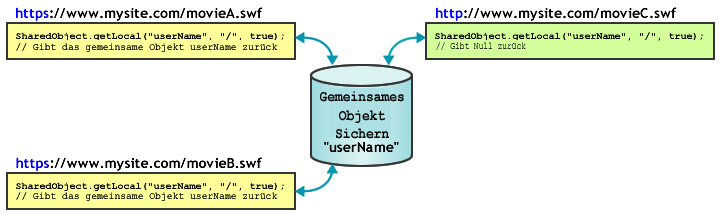

| Paket | flash.net |
| Klasse | public class SharedObject |
| Vererbung | SharedObject |
| Sprachversion: | ActionScript 3.0 |
| Laufzeitversionen: | AIR 1.0, Flash Player 9, Flash Lite 4 |
Gemeinsame Objekte können Sie für Folgendes verwenden:
-
Lokal permanente Speicherung. Dies ist die einfachste Möglichkeit zur Verwendung eines gemeinsamen Objekts, für die Flash Media Server nicht erforderlich ist. Beispielsweise können Sie
SharedObject.getLocal()aufrufen, um ein gemeinsames Objekt in einer Anwendung wie z. B. einen Rechner mit Speicher zu erstellen. Wenn der Benutzer den Rechner schließt, speichert Flash Player den letzten Wert in einem gemeinsamen Objekt auf dem Computer des Benutzers. Daraufhin wird der Rechner bei der nächsten Verwendung mit dem zuletzt verwendeten Wert geöffnet. Wenn Sie die Eigenschaften des gemeinsamen Objekts vor dem Schließen des Rechners aufnullsetzen, wird die Anwendung beim nächsten Start ohne Werte geöffnet. Ein anderes Beispiel für die lokal permanente Speicherung ist die Erfassung von Benutzereinstellungen oder anderen Daten für eine komplexe Website, z. B. ein Verzeichnis der Artikel, die ein Benutzer auf einer Nachrichten-Site liest. Durch die Verfolgung dieser Informationen können bereits gelesene Artikel in anderer Form angezeigt werden als neue, ungelesene Artikel. Durch die Speicherung dieser Angaben auf dem Computer des Benutzers kann die Serverlast reduziert werden. -
Speichern und Freigeben von Daten auf Flash Media Server. Ein gemeinsames Objekt kann Daten auf dem Server speichern, die dann von anderen Clients abgerufen werden können. Rufen Sie zum Beispiel
SharedObject.getRemote()auf, um ein gemeinsames Remote-Objekt zu erstellen, etwa eine Liste mit Telefonnummer, die auf dem Server permanent gespeichert wird. Wenn ein Client Änderungen am gemeinsamen Objekt vornimmt, stehen die geänderten Daten allen Clients zur Verfügung, die zurzeit mit dem Objekt verbunden sind oder die später eine Verbindung dazu herstellen. Wenn das Objekt auch lokal gespeichert wird und ein Client Änderungen vornimmt, während er nicht mit dem Server verbunden ist, werden die Daten in das gemeinsame Remote-Objekt kopiert, wenn der Client das nächste Mal eine Verbindung mit dem Objekt herstellt. - Datenaustausch in Echtzeit: Gemeinsame Objekte ermöglichen den Datenaustausch zwischen mehreren Clients in Echtzeit. Beispiel: Sie können ein gemeinsames Remote-Objekt öffnen, in dem eine Liste der mit einem Chatraum verbundenen Benutzer gespeichert ist. Diese Liste kann von allen Clients angezeigt werden, die mit dem Objekt verbunden sind. Wenn ein neuer Benutzer eine Verbindung herstellt oder ein Benutzer den Chatraum verlässt, wird das Objekt aktualisiert, und die aktualisierte Liste der Chatraum-Benutzer wird auf allen mit dem Objekt verbundenen Clients angezeigt.
Um ein gemeinsames lokales Objekt zu erstellen, rufen Sie SharedObject.getLocal() auf. Um ein gemeinsames Remote-Objekt zu erstellen, rufen Sie SharedObject.getRemote() auf.
Wenn eine Anwendung geschlossen wird, werden gemeinsame Objekte an eine Festplatte ausgegeben (flush) oder geschrieben. Sie können auch die flush()-Methode aufrufen, um die Daten ausdrücklich auf eine Festplatte zu schreiben.
Lokaler Speicherplatz. Lokale gemeinsame Objekte bringen einige Beschränkungen mit sich, die beim Entwurf einer Anwendung unbedingt zu berücksichtigen sind. Es kann vorkommen, dass die SWF-Dateien nicht zum Schreiben lokaler gemeinsamer Objekte berechtigt sind oder die in lokalen gemeinsamen Objekten gespeicherten Daten ohne Ihr Wissen gelöscht werden. Flash Player-Benutzer haben die Möglichkeit, den Speicherplatz, der einzelnen oder allen Domänen zur Verfügung steht, selbst zu verwalten. Wenn die Benutzer den bereitgestellten Speicherplatz verringern, könnten einige lokale gemeinsame Objekte gelöscht werden. Außerdem stehen Flash Player-Benutzern Sicherheitseinstellungen zur Verfügung, mit denen sie verhindern können, dass Domänen von Dritten (andere Domänen als die in der aktuellen Browser-Adressleiste angezeigte) lokale gemeinsame Objekte lesen oder schreiben. Beachten Sie des Weiteren, dass unter Mac OS ab AIR 3.3. ein anderer Speicherort für lokale gemeinsame Objekte verwendet wird. Wenn Sie also ein Upgrade auf den 3.3. Namespace ausführen, kann es so aussehen, als ob die Objekte verloren gegangen sind.
Hinweis: SWF-Dateien, die auf einem lokalen Computer gespeichert sind und ausgeführt werden, können gemeinsame Objekte von Dritten stets auf Festplatte schreiben. Nähere Informationen zu gemeinsamen Objekten von Dritten finden Sie in der Flash Player-Hilfe unter Global Speichereinstellungen.
Es wird empfohlen, Prüfungen auf Probleme im Zusammenhang mit dem Speicherplatz und den Benutzer-Sicherheitseinstellungen durchzuführen. Nehmen Sie diese Prüfungen vor, wenn Sie getLocal() und flush() aufrufen:
-
SharedObject.getLocal(): Flash Player gibt eine Ausnahme aus, wenn der Aufruf dieser Methode fehlschlägt, z. B. wenn der Benutzer gemeinsame Objekte von Dritten deaktiviert hat und die Domäne Ihrer SWF-Datei nicht mit der Domäne in der Browser-Adressleiste übereinstimmt. -
SharedObject.flush(): Flash Player gibt eine Ausnahme aus, wenn der Aufruf dieser Methode fehlschlägt. Wenn der Aufruf erfolgreich ist, wirdSharedObjectFlushStatus.FLUSHEDzurückgegeben. Wenn zusätzlicher Speicher erforderlich ist, wirdSharedObjectFlushStatus.PENDINGzurückgegeben. Flash Player fordert den Benutzer auf, zusätzlichen Speicherplatz für lokal gespeicherte Informationen zu genehmigen. Dann wird das EreignisnetStatusmit einem Informationsobjekt ausgelöst, das angibt, ob die Datenausgabe erfolgreich war oder fehlgeschlagen ist.
Wenn die SWF-Datei versucht, lokale gemeinsame Objekte zu erstellen oder zu bearbeiten, muss sie mindestens 215 Pixel breit und 138 Pixel hoch sein. Dies sind die Mindestmaße für die Anzeige des Dialogfelds, mit dem der Benutzer aufgefordert wird, den maximalen Speicherplatz für lokale gemeinsame Objekte zu erhöhen. Wenn Ihre SWF-Datei kleiner ist und zusätzlicher Speicherplatz benötigt wird, schlägt SharedObject.flush() fehl, gibt SharedObjectFlushedStatus.PENDING zurück und löst das Ereignis netStatus aus.
Gemeinsame Remote-Objekte: Mit Flash Media Server können Sie gemeinsame Remote-Objekte erstellen und verwenden, die in Echtzeit von allen Clients, die mit Ihrer Anwendung verbunden sind, verwendet werden können. Wenn ein Client eine Eigenschaft eines gemeinsamen Remote-Objekts ändert, wird die Eigenschaft für alle verbundenen Clients geändert. Sie können gemeinsame Remote-Objekte verwenden, um Clients zu synchronisieren, zum Beispiel in einem Spiel mit mehreren Spielern.
Jedes gemeinsame Remote-Objekt verfügt über eine data-Eigenschaft, bei der es sich um ein Objekt mit Eigenschaften handelt, das Daten speichert. Rufen Sie setProperty() auf, um eine Eigenschaft des Data-Objekts zu ändern. Der Server aktualisiert die Eigenschaften, löst ein sync-Ereignis aus und sendet die Eigenschaften zurück an die verbundenen Clients.
Sie können gemeinsame Remote-Objekte auf dem Client, auf dem Server oder auf beiden speichern. Standardmäßig speichert Flash Player gemeinsame Remote-Objekte einer Größe von bis zu 100K lokal. Wenn Sie versuchen, ein größeres Objekt zu speichern, zeigt Flash Player das Dialogfeld für den lokalen Speicher an, in dem der Benutzer die lokale Speicherung des gemeinsamen Objekts zulassen oder ablehnen kann. Achten Sie darauf, dass die Bühnengröße mindestens 215 mal 138 Pixel beträgt. Dies ist die Mindestgröße, die Flash für die Anzeige des Dialogfelds benötigt.
Wählt der Benutzer „Zulassen“, speichert der Server das gemeinsame Objekt und löst ein netStatus-Ereignis mit einer code-Eigenschaft von SharedObject.Flush.Success aus. Wählt der Benutzer „Verweigern“, speichert der Server das gemeinsame Objekt nicht und löst ein netStatus-Ereignis mit einer code-Eigenschaft von SharedObject.Flush.Failed aus.
Verwandte API-Elemente
 Vererbte öffentliche Eigenschaften ausblenden
Vererbte öffentliche Eigenschaften ausblenden Vererbte öffentliche Eigenschaften anzeigen
Vererbte öffentliche Eigenschaften anzeigen| Eigenschaft | Definiert von | ||
|---|---|---|---|
| client : Object
Gibt das Objekt an, bei dem Callback-Methoden aufgerufen werden. | SharedObject | ||
 | constructor : Object
Ein Verweis auf das Klassenobjekt oder die Konstruktorfunktion für eine angegebene Objektinstanz. | Object | |
| data : Object [schreibgeschützt]
Die Sammlung von Attributen, die der Eigenschaft „data“ des Objekts zugewiesen sind. Diese Attribute können gemeinsam genutzt und gespeichert werden. | SharedObject | ||
| defaultObjectEncoding : uint [statisch]
Die Standardobjektkodierung (AMF-Version) für alle in der SWF-Datei erstellten lokalen gemeinsamen Objekte. | SharedObject | ||
| fps : Number [Nur Schreiben]
Gibt an, wie oft pro Sekunde die clientseitigen Änderungen an einem gemeinsamen Objekt an den Server gesendet werden. | SharedObject | ||
| objectEncoding : uint
Die Objektkodierung (AMF-Version) für dieses gemeinsame Objekt. | SharedObject | ||
| preventBackup : Boolean [statisch]
Gibt an, ob lokal freigegebene Objekte auf dem iOS-Cloud-Sicherungsdienst gesichert werden. | SharedObject | ||
| size : uint [schreibgeschützt]
Ruft die aktuelle Größe des gemeinsamen Objekts in Byte ab. | SharedObject | ||
| Methode | Definiert von | ||
|---|---|---|---|
| addEventListener(type:String, listener:Function, useCapture:Boolean = false, priority:int = 0, useWeakReference:Boolean = false):void
Registriert ein Ereignis-Listener-Objekt bei einem EventDispatcher-Objekt, sodass der Listener über ein Ereignis benachrichtigt wird. | EventDispatcher | |
Lokale gemeinsame Objekte: Entfernt alle Daten und löscht das gemeinsame Objekt von der Festplatte. | SharedObject | ||
Schließt die Verbindung zwischen einem gemeinsamen Remote-Objekt und dem Server. | SharedObject | ||
Stellt über ein angegebenes NetConnection-Objekt eine Verbindung zu einem gemeinsamen Remote-Objekt her. | SharedObject | ||
|
Sendet ein Ereignis in den Ereignisablauf. | EventDispatcher | |
Schreibt ein lokal permanentes gemeinsames Objekt in eine lokale Datei. | SharedObject | ||
[statisch]
Gibt einen Verweis auf ein lokal permanentes gemeinsames Objekt zurück, das nur für den aktuellen Client verfügbar ist. | SharedObject | ||
getRemote(name:String, remotePath:String = null, persistence:Object = false, secure:Boolean = false):SharedObject [statisch]
Gibt einen Verweis auf das gemeinsame Objekt auf Flash Media Server zurück, auf das mehrere Clients zugreifen können. | SharedObject | ||
|
Überprüft, ob das EventDispatcher-Objekt Listener für einen bestimmten Ereignistyp registriert hat. | EventDispatcher | |
|
Gibt an, ob für ein Objekt eine bestimmte Eigenschaft definiert wurde. | Object | |
|
Gibt an, ob eine Instanz der Object-Klasse in der Prototypkette des Objekts vorhanden ist, das als Parameter angegeben wurde. | Object | |
|
Gibt an, ob die angegebene Eigenschaft vorhanden ist und durchlaufen werden kann. | Object | |
|
Entfernt einen Listener aus dem EventDispatcher-Objekt. | EventDispatcher | |
Überträgt eine Meldung an alle mit einem gemeinsamen Remote-Objekt verbundenen Clients, einschließlich des Clients, von dem die Meldung gesendet wurde. | SharedObject | ||
Weist den Server an, dass der Wert einer Eigenschaft im gemeinsamen Objekt geändert wurde. | SharedObject | ||
Aktualisiert den Wert einer Eigenschaft in einem gemeinsamen Objekt und informiert den Server, dass der Wert der Eigenschaft geändert wurde. | SharedObject | ||
|
Legt die Verfügbarkeit einer dynamischen Eigenschaft für Schleifenoperationen fest. | Object | |
|
Gibt die Stringdarstellung dieses Objekts zurück, formatiert entsprechend den Konventionen des Gebietsschemas. | Object | |
|
Gibt das angegebene Objekt als String zurück. | Object | |
|
Gibt den Grundwert des angegebenen Objekts zurück. | Object | |
|
Überprüft, ob bei diesem EventDispatcher-Objekt oder bei einem seiner Vorgänger ein Ereignis-Listener für einen bestimmten Ereignistyp registriert ist. | EventDispatcher | |
| Ereignis | Übersicht | Definiert von | ||
|---|---|---|---|---|
| [broadcast event] Wird ausgelöst, wenn Flash Player oder eine AIR-Anwendung den Betriebssystemfokus erhält und aktiv wird. | EventDispatcher | ||
| Wird ausgelöst, wenn eine Ausnahme asynchron, d. h. aus nativem asynchronem Code ausgelöst wird. | SharedObject | |||
| [broadcast event] Wird ausgelöst, wenn Flash Player- oder die AIR-Anwendung den Fokus verliert und inaktiv wird. | EventDispatcher | ||
| Wird ausgelöst, wenn der Status oder die Fehlerbedingung einer SharedObject-Instanz protokolliert wird. | SharedObject | |||
| Wird ausgelöst, wenn ein gemeinsames Remote-Objekt vom Server aktualisiert wurde. | SharedObject | |||
client | Eigenschaft |
client:Object| Sprachversion: | ActionScript 3.0 |
| Laufzeitversionen: | AIR 1.0, Flash Player 9, Flash Lite 4 |
Gibt das Objekt an, bei dem Callback-Methoden aufgerufen werden. Das Standardobjekt ist this. Wenn Sie die client-Eigenschaft auf ein anderes Objekt einstellen, werden die Callback-Methoden bei dem eingestellten Objekt aufgerufen.
Implementierung
public function get client():Object public function set client(value:Object):voidAuslöser
TypeError — Die client-Eigenschaft muss auf ein Objekt eingestellt werden, das nicht null ist.
|
data | Eigenschaft |
data:Object [schreibgeschützt] | Sprachversion: | ActionScript 3.0 |
| Laufzeitversionen: | AIR 1.0, Flash Player 9, Flash Lite 4 |
Die Sammlung von Attributen, die der data-Eigenschaft des Objekts zugewiesen sind. Diese Attribute können gemeinsam genutzt und gespeichert werden. Jedes Attribut ist ein Objekt eines beliebigen ActionScript- oder JavaScript-Typs: Array, Number, Boolean, ByteArray, XML usw. Mit den folgenden Zeilen werden beispielsweise verschiedenen Aspekten eines gemeinsamen Objekts Werte zugewiesen:
var items_array:Array = new Array(101, 346, 483);
var currentUserIsAdmin:Boolean = true;
var currentUserName:String = "Ramona";
var my_so:SharedObject = SharedObject.getLocal("superfoo");
my_so.data.itemNumbers = items_array;
my_so.data.adminPrivileges = currentUserIsAdmin;
my_so.data.userName = currentUserName;
for (var prop in my_so.data) {
trace(prop+": "+my_so.data[prop]);
}
Alle Attribute der data-Eigenschaft eines gemeinsamen Objekts werden gespeichert, wenn das Objekt dauerhaft ist, und das gemeinsame Objekt enthält die folgenden Informationen:
userName: Ramona
adminPrivileges: true
itemNumbers: 101,346,483
Hinweis: Weisen Sie der data-Eigenschaft eines gemeinsamen Objekts keine Werte direkt zu, wie in so.data = someValue. Flash Player ignoriert diese Zuweisungen.
Um Attribute von lokalen gemeinsamen Objekten zu löschen, verwenden Sie folgende Syntax: delete so.data.attributeName. Das Attribut eines lokalen gemeinsamen Objekts wird nicht gelöscht, wenn Sie es auf null oder undefined setzen.
Um als privat definierte Werte für ein gemeinsames Objekt zu erstellen (d. h. Werte, die nur für die Client-Instanz verfügbar sind, wenn das Objekt verwendet wird, und die beim Schließen nicht zusammen mit dem Objekt gespeichert werden), erstellen Sie zum Speichern Eigenschaften, die nicht data heißen (siehe folgendes Beispiel).
var my_so:SharedObject = SharedObject.getLocal("superfoo");
my_so.favoriteColor = "blue";
my_so.favoriteNightClub = "The Bluenote Tavern";
my_so.favoriteSong = "My World is Blue";
for (var prop in my_so) {
trace(prop+": "+my_so[prop]);
}
Das gemeinsame Objekt enthält die folgenden Daten:
favoriteSong: My World is Blue
favoriteNightClub: The Bluenote Tavern
favoriteColor: blue
data: [object Object]
Bei gemeinsamen Remote-Objekten, die mit einem Server verwendet werden, stehen alle Attribute der data-Eigenschaft allen mit dem Objekt verbundenen Clients zur Verfügung, und alle Attribute werden gespeichert, wenn es sich um ein permanentes Objekt handelt. Wenn ein Client den Wert eines Attributs ändert, sehen alle Clients den neuen Wert.
Implementierung
public function get data():ObjectVerwandte API-Elemente
defaultObjectEncoding | Eigenschaft |
defaultObjectEncoding:uint| Sprachversion: | ActionScript 3.0 |
| Laufzeitversionen: | AIR 1.0, Flash Player 9, Flash Lite 4 |
Die Standardobjektkodierung (AMF-Version) für alle in der SWF-Datei erstellten lokalen gemeinsamen Objekte. Wenn lokale gemeinsame Objekte auf Festplatte geschrieben werden, gibt die Eigenschaft SharedObject.defaultObjectEncoding an, welche AMF-Version verwendet werden soll: ActionScript 3.0 (AMF3) oder ActionScript 1.0 oder 2.0 (AMF0).
Nähere Informationen zur Objektkodierung einschließlich der Kodierungsunterschiede zwischen gemeinsamen lokalen und Remote-Objekten finden Sie in der Beschreibung der Eigenschaft objectEncoding.
Standardmäßig wird SharedObject.defaultObjectEncoding auf die Verwendung des Formats ActionScript 3.0 (AMF3) eingestellt. Wenn Sie lokale gemeinsame Objekte benötigen, die von im Format ActionScript 2.0 oder 1.0 geschriebenen SWF-Dateien gelesen werden können, stellen Sie SharedObject.defaultObjectEncoding am Skriptanfang auf die Verwendung des Formats ActionScript 1.0 bzw. ActionScript 2.0 ein (flash.net.ObjectEncoding.AMF0), bevor Sie mit der Erstellung lokaler Objekte beginnen. Alle danach erstellten lokalen gemeinsamen Objekte verwenden die AMF0-Kodierung und unterstützen somit ältere Inhalte. Es ist nicht möglich, den objectEncoding-Wert bereits erstellter lokaler gemeinsamer Objekte durch die Einstellung von SharedObject.defaultObjectEncoding zu ändern.
Um die Objektkodierung für die einzelnen Objekte anstatt für alle von der SWF-Datei erstellten gemeinsamen Objekte einzustellen, setzen Sie die objectEncoding-Eigenschaft stattdessen auf das jeweilige lokale gemeinsame Objekt.
Implementierung
public static function get defaultObjectEncoding():uint public static function set defaultObjectEncoding(value:uint):voidVerwandte API-Elemente
fps | Eigenschaft |
fps:Number [Nur Schreiben] | Sprachversion: | ActionScript 3.0 |
| Laufzeitversionen: | AIR 1.0, Flash Player 9, Flash Lite 4 |
Gibt an, wie oft pro Sekunde die clientseitigen Änderungen an einem gemeinsamen Objekt an den Server gesendet werden.
Verwenden Sie diese Methode, wenn Sie den Umfang des Datenverkehrs zwischen Client und Server steuern möchten. Beispiel: Wenn die Verbindungsgeschwindigkeit zwischen Client und Server ziemlich langsam ist, empfiehlt es sich, fps auf einen relativ niedrigen Wert zu setzen. Wenn der Client jedoch mit einer Multiuser-Anwendung verbunden ist und es auf die zeitliche Koordinierung ankommt, sollten Sie fps auf einen relativ hohen Wert setzen.
Durch Festlegen von fps wird ein sync-Ereignis ausgelöst und alle Änderungen werden beim Server aktualisiert. Wenn Sie den Server ausschließlich manuell aktualisieren möchten, müssen Sie fps auf 0 setzen.
Erst nach Auslösung des Ereignisses sync, werden die Änderungen an den Server gesendet. Das heißt, bei einer langsamen Reaktionszeit des Servers werden Aktualisierungen möglicherweise weniger häufig an den Server gesendet als in dieser Eigenschaft angegeben.
Implementierung
public function set fps(value:Number):voidobjectEncoding | Eigenschaft |
objectEncoding:uint| Sprachversion: | ActionScript 3.0 |
| Laufzeitversionen: | AIR 1.0, Flash Player 9, Flash Lite 4 |
Die Objektkodierung (AMF-Version) für dieses gemeinsame Objekt. Wenn ein lokales gemeinsames Objekt auf Festplatte geschrieben wird, gibt die Eigenschaft objectEncoding an, welche AMF-Version verwendet werden soll: ActionScript 3.0 (AMF3) oder ActionScript 1.0 oder 2.0 (AMF0).
Die Objektkodierung wird unterschiedlich gehandhabt, je nachdem, ob es sich um ein lokales gemeinsames Objekt oder um ein gemeinsames Remote-Objekt handelt.
- Lokale gemeinsame Objekte: Sie können den Wert der Eigenschaft
objectEncodingfür lokale gemeinsame Objekte abrufen oder einstellen. Mit dem Wert fürobjectEncodingwird festgelegt, welche Formatierung zum Schreiben dieses lokalen gemeinsamen Objekts verwendet wird. Wenn das Objekt von SWF-Dateien gelesen werden muss, die mit ActionScript 2.0 oder 1.0 geschrieben wurden, setzen SieobjectEncodingaufObjectEncoding.AMF0. Auch wenn die Objektkodierung so eingestellt ist, dass im Format AMF3 geschrieben wird, kann Flash Player lokale gemeinsame Objekte im Format AMF0 lesen. Das heißt, wenn Sie den Standardwert für diese Eigenschaft verwenden (ObjectEncoding.AMF3), kann Ihre SWF-Datei trotzdem gemeinsame Objekte lesen, die mit ActionScript 2.0- oder 1.0-SWF-Dateien erstellt wurden. - Gemeinsame Remote-Objekte: Bei einer Verbindung mit dem Server übernimmt ein gemeinsames Remote-Objekt seine
objectEncoding-Einstellung von der verknüpften NetConnection-Instanz (die zum Verbinden des gemeinsamen Remote-Objekts verwendete Instanz). Ohne Serververbindung übernimmt das gemeinsame Remote-Objekt diedefaultObjectEncoding-Einstellung von der verknüpften NetConnection-Instanz. Da bei gemeinsamen Remote-Objekten der Wert der EigenschaftobjectEncodingdurch die NetConnection-Instanz bestimmt wird, ist diese Eigenschaft für gemeinsame Remote-Objekte schreibgeschützt.
Implementierung
public function get objectEncoding():uint public function set objectEncoding(value:uint):voidAuslöser
ReferenceError — Sie haben versucht, den Wert für die objectEncoding-Eigenschaft eines gemeinsamen Remote-Objekts einzustellen. Diese Eigenschaft ist für gemeinsame Remote-Objekte schreibgeschützt, da dieser Wert von der verknüpften NetConnection-Instanz festgelegt wird.
|
Verwandte API-Elemente
preventBackup | Eigenschaft |
preventBackup:Boolean| Sprachversion: | ActionScript 3.0 |
| Laufzeitversionen: | AIR 3.7 |
Gibt an, ob lokal freigegebene Objekte auf dem iOS-Cloud-Sicherungsdienst gesichert werden.
Geben Sie „true“ oder „false“ an:
- true – verhindert, dass alle lokal freigegebenen Objekte im iOS-Cloud-Sicherungsdienst gesichert werden.
- false (Standard) – lokal freigegebene Objekte werden im iOS-Cloud-Sicherungsdienst gesichert.
Diese Eigenschaft gilt nur für lokal freigegebene Objekte und iOS.
Implementierung
public static function get preventBackup():Boolean public static function set preventBackup(value:Boolean):voidsize | Eigenschaft |
size:uint [schreibgeschützt] | Sprachversion: | ActionScript 3.0 |
| Laufzeitversionen: | AIR 1.0, Flash Player 9, Flash Lite 4 |
Ruft die aktuelle Größe des gemeinsamen Objekts in Byte ab.
Um die Größe eines gemeinsamen Objekts zu berechnen, analysiert Flash die einzelnen Dateneigenschaften des Objekts. Je mehr Dateneigenschaften ein Objekt aufweist, desto länger dauert es, die Größe zu ermitteln. Das Schätzen der Objektgröße kann sehr viel Verarbeitungszeit beanspruchen. Deshalb sollten Sie diese Methode vermeiden, sofern sie nicht wirklich erforderlich ist.
Implementierung
public function get size():uintBeispiel ( Verwendung dieses Beispiels )
"thehobbit" erstellt. Eine Eigenschaft mit dem Namen username wird der Eigenschaft „data“ des SharedObject-Objekts hinzugefügt. Die Eigenschaft size gibt dann den angegebenen Wert zurück.
import flash.net.SharedObject;
// if these get copied or not
var mySo:SharedObject = SharedObject.getLocal("thehobbit");
mySo.data.username = "bilbobaggins";
trace(mySo.size); // 55
clear | () | Methode |
public function clear():void| Sprachversion: | ActionScript 3.0 |
| Laufzeitversionen: | AIR 1.0, Flash Player 9, Flash Lite 4 |
Lokale gemeinsame Objekte: Entfernt alle Daten und löscht das gemeinsame Objekt von der Festplatte. Der Verweis auf das gemeinsame Objekt ist weiterhin aktiv, die zugehörigen Dateneigenschaften werden jedoch gelöscht.
Für gemeinsame Remote-Objekte, die mit Flash Media Server verwendet werden, trennt clear() die Verbindung zum Objekt und löscht alle Daten. Wenn das gemeinsame Objekt lokal gespeichert wird, wird es mit dieser Methode auch von der Festplatte gelöscht. Der Verweis auf das gemeinsame Objekt ist weiterhin aktiv, die zugehörigen Dateneigenschaften werden jedoch gelöscht.
Beispiel ( Verwendung dieses Beispiels )
hostName erstellt (und in anschließenden Durchläufen abgerufen). Eine Eigenschaft mit dem Namen username wird der Eigenschaft „data“ des SharedObject-Objekts hinzugefügt. Anschließend wird die Methode clear() aufgerufen, die alle Informationen löscht, die dem Datenobjekt hinzugefügt wurden (in diesem Fall die Eigenschaft username).
package {
import flash.net.SharedObject;
public class SharedObject_clear {
private var hostName:String = "yourDomain";
private var username:String = "yourUsername";
public function SharedObject_clear() {
var mySo:SharedObject = SharedObject.getLocal(hostName);
if(mySo.data.username == null) {
mySo.data.username = username;
trace("set: " + mySo.data.username); // yourUsername
}
else {
mySo.clear();
trace("cleared: " + mySo.data.username); // undefined
}
}
}
}
close | () | Methode |
public function close():void| Sprachversion: | ActionScript 3.0 |
| Laufzeitversionen: | AIR 1.0, Flash Player 9, Flash Lite 4 |
Schließt die Verbindung zwischen einem gemeinsamen Remote-Objekt und dem Server. Wenn ein gemeinsames Remote-Objekt permanent lokal gespeichert ist, kann der Benutzer nach dem Aufruf dieser Methode Änderungen an der lokalen Kopie vornehmen. Das nächste Mal, wenn der Benutzer eine Verbindung zu dem gemeinsamen Remote-Objekt herstellt, werden diese Änderungen an den Server gesendet.
connect | () | Methode |
public function connect(myConnection:NetConnection, params:String = null):void| Sprachversion: | ActionScript 3.0 |
| Laufzeitversionen: | AIR 1.0, Flash Player 9, Flash Lite 4 |
Stellt über ein angegebenes NetConnection-Objekt eine Verbindung zu einem gemeinsamen Remote-Objekt her. Verwenden Sie diese Methode nach dem Aufruf von getRemote(). Wird die Verbindung erfolgreich hergestellt, wird das sync-Ereignis ausgelöst.
Bevor Sie beginnen, mit einem gemeinsamen Remote-Objekt zu arbeiten, prüfen Sie, ob Fehler vorliegen, indem Sie eine try..catch..finally Anweisung. Warten Sie dann auf das Ereignis sync und verarbeiten Sie es, bevor Sie Änderungen am gemeinsamen Objekt vornehmen. Alle Änderungen, die lokal vor dem Auslösen des sync-Ereignisses vorgenommen werden, können verloren gehen.
Rufen Sie die connect()-Methode auf, um eine Verbindung zu einem gemeinsamen Remote-Objekt herzustellen, zum Beispiel:
var myRemoteSO:SharedObject = SharedObject.getRemote("mo", myNC.uri, false);
myRemoteSO.connect(myNC);
Parameter
myConnection:NetConnection — Ein NetConnection-Objekt, das das Real-Time Messaging Protocol (RTMP) verwendet, zum Beispiel für die Kommunikation mit Flash Media Server.
| |
params:String (default = null) |
Auslöser
Error — Flash Player konnte keine Verbindung zu dem angegebenen gemeinsamen Remote-Objekt herstellen. Vergewissern Sie sich, dass die NetConnection-Instanz gültig und verbunden ist und dass das gemeinsame Remote-Objekt erfolgreich auf dem Server erstellt wurde.
|
Verwandte API-Elemente
flush | () | Methode |
public function flush(minDiskSpace:int = 0):String| Sprachversion: | ActionScript 3.0 |
| Laufzeitversionen: | AIR 1.0, Flash Player 9, Flash Lite 4 |
Schreibt ein lokal permanentes gemeinsames Objekt in eine lokale Datei. Wenn Sie diese Methode nicht verwenden, schreibt Flash Player das gemeinsame Objekt in eine Datei, wenn die Sitzung des gemeinsamen Objekts endet, d. h., wenn die SWF-Datei geschlossen wird, wenn das gemeinsame Objekt gelöscht wird, weil keine weiteren Verweise darauf vorhanden sind, oder wenn Sie SharedObject.clear() oder SharedObject.close() aufrufen.
Wenn diese Methode SharedObjectFlushStatus.PENDING zurückgibt, fordert Flash Player den Benutzer in einem Dialogfeld auf, mehr Speicherplatz für Objekte dieser Domäne bereitzustellen. Wenn der Speicherplatz für das gemeinsame Objekt in Zukunft zunehmen darf, um die Rückgabe des Werts PENDING zu vermeiden, belegen Sie minDiskSpace mit einem Wert. Bei dem Versuch, eine Datei zu schreiben, ermittelt Flash Player die Anzahl der an minDiskSpace übergebenen Byte, anstatt lediglich zu überprüfen, ob der vorhandene Platz zum Speichern des gemeinsamen Objekts in der aktuellen Größe ausreicht.
Wenn Sie beispielsweise annehmen, dass ein gemeinsames Objekt maximal 500 Byte groß wird, übergeben Sie 500 als Wert für minDiskSpace, auch wenn die Datei zunächst viel kleiner ist. Flash fordert dann den Benutzer auf, für das gemeinsame Objekt 500 Byte Speicherplatz bereitzustellen. Wenn der Benutzer den gewünschten Speicherplatz zuweist, ist es in Zukunft beim Ausgeben des Objekts nicht erforderlich, mehr Speicherplatz anzufordern (sofern die Größe 500 Byte nicht übersteigt).
Nachdem der Benutzer auf dieses Dialogfeld reagiert hat, wird diese Methode erneut aufgerufen. Ein netStatus-Ereignis wird mit der code-Eigenschaft SharedObject.Flush.Success oder SharedObject.Flush.Failed ausgelöst
Parameter
minDiskSpace:int (default = 0) |
String — Einer der folgenden Werte:
|
Auslöser
Error — Flash Player kann das gemeinsame Objekt nicht auf Festplatte schreiben. Dieser Fehler kann auftreten, wenn der Benutzer das Speichern lokaler Daten für Objekte dieser Domäne generell nicht zugelassen hat.
Hinweis: Über lokale Inhalte können immer gemeinsame Objekte von Dritt-Domänen (anderen Domänen als der in der Adresszeile des Browsers) auf Festplatte geschrieben werden, auch wenn das Schreiben gemeinsamer Objekte durch Dritt-Domänen nicht zulässig ist. |
Verwandte API-Elemente
Beispiel ( Verwendung dieses Beispiels )
hostName erstellt (und in anschließenden Durchläufen abgerufen). Eine Eigenschaft mit dem Namen username wird der Eigenschaft „data“ des SharedObject-Objekts hinzugefügt. Anschließend wird die Methode flush() aufgerufen, und es wird überprüft, ob der String pending oder der boolesche Wert true bzw. false zurückgegeben wurde. Beachten Sie, dass alle geöffneten SharedObject-Instanzen automatisch ausgegeben werden, wenn die aktuelle Flash Player-Instanz geschlossen wird.
package {
import flash.net.SharedObject;
public class SharedObject_flush {
private var hostName:String = "yourDomain";
private var username:String = "yourUsername";
public function SharedObject_flush() {
var mySo:SharedObject = SharedObject.getLocal(hostName);
mySo.data.username = username;
var flushResult:Object = mySo.flush();
trace("flushResult: " + flushResult);
trace(mySo.data.username); // yourUsername
}
}
}
getLocal | () | Methode |
public static function getLocal(name:String, localPath:String = null, secure:Boolean = false):SharedObject| Sprachversion: | ActionScript 3.0 |
| Laufzeitversionen: | AIR 1.0, Flash Player 9, Flash Lite 4 |
Gibt einen Verweis auf ein lokal permanentes gemeinsames Objekt zurück, das nur für den aktuellen Client verfügbar ist. Falls das gemeinsam genutzte Objekt nicht bereits existiert, wird es durch diese Methode erstellt. Wenn einer oder mehrere der an getLocal() übergebenen Werte ungültig sind oder der Aufruf fehlschlägt, gibt Flash Player eine Ausnahme aus.
Anhand des folgenden Codes wird gezeigt, wie Sie den zurückgegebenen Verweis auf ein gemeinsames Objekt einer Variablen zuordnen:
var so:SharedObject = SharedObject.getLocal("savedData");
Hinweis: Wenn der Benutzer für diese Domäne generell keine lokale Speicherung zulässt, wird das Objekt auch dann nicht lokal gespeichert, wenn für localPath ein lokaler Pfad angegeben wurde. Es gibt eine Ausnahme zu dieser Regel: lokale Inhalte. Über lokale Inhalte können immer gemeinsam genutzte Objekte von Dritt-Domänen (anderen Domänen als der in der Adresszeile des Browsers) auf Festplatte geschrieben werden, auch wenn das Schreiben gemeinsam genutzter Objekte durch Dritt-Domänen nicht zulässig ist.
Um Namenskonflikte zu vermeiden, wird in Flash auch der Speicherort der SWF-Datei einbezogen, die das gemeinsame Objekt erstellt hat. Wenn zum Beispiel eine SWF-Datei auf www.meineFirma.com/apps/stockwatcher.swf ein gemeinsames Objekt namens portfolio erstellt, entsteht kein Konflikt mit einem anderen, ebenfalls portfolio genannten Objekt, das von einer SWF-Datei auf www.IhreFirma.com/photoshoot.swf erstellt wurde, weil die beiden SWF-Dateien aus zwei verschiedenen Verzeichnissen stammen.
localPath ist zwar ein optionaler Parameter, dennoch sollten Sie seine Verwendung in Erwägung ziehen, insbesondere wenn andere SWF-Dateien auf das gemeinsame Objekt zugreifen müssen. Wenn die Daten im gemeinsamen Objekt speziell für eine SWF-Datei gelten, die nicht an einen anderen Speicherort verschoben wird, ist die Verwendung des Standardwertes sinnvoll. Wenn andere SWF-Dateien auf das gemeinsame Objekt zugreifen müssen oder wenn die SWF-Datei, die das gemeinsame Objekt erstellt, zu einem späteren Zeitpunkt verschoben wird, kann der Wert dieses Parameters entscheidend dafür sein, ob SWF-Dateien auf das gemeinsame Objekt zugreifen können. Wenn Sie beispielsweise ein gemeinsames Objekt erstellen und für localPath der Standardwert des vollständigen Pfads zur SWF-Datei eingestellt ist, kann keine andere SWF-Datei auf das gemeinsame Objekt zugreifen. Wenn Sie die Original-SWF-Datei später an einen anderen Speicherort verschieben, kann selbst diese SWF-Datei nicht mehr auf die bereits im gemeinsamen Objekt gespeicherten Daten zugreifen.
Verwenden Sie den Parameter localpath, um die versehentliche Beschränkung des Zugriffs auf ein gemeinsames Objekt zu vermeiden. Wenn Sie möchten, dass das gemeinsame Objekt für alle SWF-Dateien in der Domäne verfügbar ist, setzen Sie den Parameter localPath auf / (Schrägstrich). Dadurch wird jedoch das Risiko der Namenskonflikte mit anderen gemeinsamen Objekten in der Domäne erhöht. Sie können die Möglichkeiten ein Stück weit einschränken, indem Sie den Parameter localPath auf Ordnernamen aus dem vollständigen Pfad der SWF-Datei setzen. Beispiel: Für das von der SWF-Datei unter www.myCompany.com/apps/stockwatcher.swf erstellte gemeinsame Objekt portfolio können Sie den Parameter localPath auf /, /apps oder /apps/stockwatcher.swf setzen. Welcher Ansatz für Ihre Anwendung die meiste Flexibilität bietet, ist von der jeweiligen Anwendung abhängig.
Beachten Sie bei Verwendung dieser Methode das folgende Sicherheitsmodell von:
- Auf gemeinsam genutzte Objekte kann nicht über Sandbox-Grenzen hinweg zugegriffen werden.
- Benutzer können den Zugriff auf gemeinsam genutzte Objekte über das Flash Player-Dialogfeld „Einstellungen“ oder über den Einstellungsmanager einschränken. Standardmäßig kann eine Anwendung gemeinsame Objekte mit einem Datenumfang von bis zu 100 KB pro Domäne erstellen. Administratoren und Benutzer können auch Einschränkungen für Schreibberechtigungen im Dateisystem festlegen.
Beispiel: Sie veröffentlichen die Inhalte einer SWF-Datei für die Wiedergabe als lokale Dateien (entweder lokal installierte SWF-Dateien oder EXE-Dateien) und müssen von mehreren lokalen SWF-Dateien auf ein bestimmtes gemeinsames Objekt zugreifen. In dieser Situation müssen Sie darauf achten, dass für die lokalen Dateien möglicherweise zwei verschiedene Speicherorte zur Speicherung von gemeinsamen Objekten verwendet werden. Welche Domäne verwendet wird, hängt von den Sicherheitsberechtigungen der lokalen Datei ab, die das gemeinsame Objekt erstellt hat. Für lokale Dateien sind drei verschiedene Berechtigungsstufen möglich:
- Nur Zugriff auf das lokale Dateisystem
- Nur Zugriff auf das Netzwerk
- Zugriff auf das Netzwerk und auf das lokale Dateisystem
Lokale Dateien mit Zugriff auf das lokale Dateisystem (Stufe 1 oder 3) speichern gemeinsame Objekte an einem Speicherort. Lokale Dateien ohne Zugriff auf das lokale Dateisystem (Stufe 2) speichern gemeinsame Objekte an einem anderen Speicherort.
Sie können eine SWF-Datei daran hindern, diese Methode aufzurufen, indem Sie auf der HTML-Seite, die den SWF-Inhalt enthält, den Parameter allowNetworking der Tags object und embed festlegen.
Weitere Informationen finden Sie im Flash Player Developer Center im Abschnitt Sicherheit.
Parameter
name:String — Der Name des Objekts. Der Name darf Schrägstriche (/) enthalten. So ist beispielsweise work/addresses ein gültiger Name. Der Name eines gemeinsamen Objekts darf weder Leerzeichen noch folgende Zeichen enthalten:
~ % & \ ; : " ' , < > ? # | |
localPath:String (default = null) | |
secure:Boolean (default = false)
Wenn die SWF-Datei über eine andere Verbindung als HTTPS bereitgestellt wird und Sie diesen Parameter auf Aus dem folgenden Diagramm geht die Verwendung des Parameters  |
SharedObject — Gibt einen Verweis auf ein lokal permanentes gemeinsames Objekt zurück, das nur für den aktuellen Client verfügbar ist. Wenn Flash Player das gemeinsame Objekt nicht erstellen oder finden kann (wenn beispielsweise das mit localPath angegebene Verzeichnis nicht vorhanden ist), löst diese Methode eine Ausnahme aus.
|
Auslöser
Error — Flash Player kann das gemeinsame Objekt nicht erstellen. Dieser Fehler kann auftreten, wenn das Erstellen und Speichern von permanenten gemeinsamen Objekten durch Flash-Inhalte Dritter nicht erlaubt ist (gilt nicht für lokale Inhalte). Benutzer können unter http://www.adobe.com/support/documentation/de/flashplayer/help/settings_manager03.html im Einstellungsmanager im Bedienfeld „Globale Speichereinstellungen“ festlegen, dass permanente gemeinsame Objekte von Dritten nicht zulässig sind.
|
getRemote | () | Methode |
public static function getRemote(name:String, remotePath:String = null, persistence:Object = false, secure:Boolean = false):SharedObject| Sprachversion: | ActionScript 3.0 |
| Laufzeitversionen: | AIR 1.0, Flash Player 9, Flash Lite 4 |
Gibt einen Verweis auf das gemeinsame Objekt auf Flash Media Server zurück, auf das mehrere Clients zugreifen können. Falls das gemeinsame Remote-Objekt nicht bereits existiert, wird es durch diese Methode erstellt.
Um ein gemeinsames Remote-Objekt zu erstellen, rufen Sie getRemote() nach dem Aufruf von connect() auf, um das gemeinsame Remote-Objekt mit dem Server zu verbinden wie im folgenden Beispiel:
var nc:NetConnection = new NetConnection();
nc.connect("rtmp://somedomain.com/applicationName");
var myRemoteSO:SharedObject = SharedObject.getRemote("mo", nc.uri, false);
myRemoteSO.connect(nc);
Mit dem Ereignis sync wird bestätigt, dass die lokalen und Remote-Kopien des gemeinsamen Objekts synchronisiert sind. Alle Clients, die dieses Objekt gemeinsam verwenden sollen, müssen dieselben Werte für die Parameter name und remotePath übergeben.
Zur Erstellung eines gemeinsamen Objekts, das nur für den aktuellen Client verfügbar ist, verwenden SieSharedObject.getLocal().
Parameter
name:String — Der Name des gemeinsamen Remote-Objekts. Der Name kann Schrägstriche (/) enthalten. So ist beispielsweise „work/addresses“ ein gültiger Name. Der Name eines gemeinsamen Objekts darf weder Leerzeichen noch folgende Zeichen enthalten:
~ % & \ ; : " ' , > ? ? # | |
remotePath:String (default = null)connect() übergeben wird.
| |
persistence:Object (default = false)
Hinweis: Wenn der Benutzer für diese Domäne generell keine lokale Speicherung zulässt, wird das Objekt auch dann nicht lokal gespeichert, wenn ein lokaler Pfad angegeben wurde. Weitere Informationen finden Sie in der Beschreibung zur Klasse. | |
secure:Boolean (default = false)secure im Eintrag zur Methode getLocal.
|
SharedObject — Ein Verweis auf ein Objekt, das von mehreren Clients gemeinsam genutzt werden kann.
|
Auslöser
Error — Flash Player kann das gemeinsame Objekt weder erstellen noch öffnen. Dieser Fall kann eintreten, wenn für die Parameter remotePath und persistence nicht vorhandene Pfade angegeben wurden.
|
Verwandte API-Elemente
send | () | Methode |
public function send(... arguments):void| Sprachversion: | ActionScript 3.0 |
| Laufzeitversionen: | AIR 1.0, Flash Player 9, Flash Lite 4 |
Überträgt eine Meldung an alle mit einem gemeinsamen Remote-Objekt verbundenen Clients, einschließlich des Clients, von dem die Meldung gesendet wurde. Zur Verarbeitung und Beantwortung der Meldung erstellen Sie eine Callback-Funktion, die mit dem gemeinsamen Objekt verknüpft wird.
Parameter
... arguments — Ein oder mehrere Argumente: Ein String, der die Meldung identifiziert, der Name einer oder mehrerer Verarbeitungsfunktionen, die an das gemeinsame Objekt angehängt werden, und optionale Parameter beliebigen Typs. Der Prozedurname darf nur eine Ebene umfassen (d. h. die Form übergeordnet/untergeordnet ist nicht zulässig) und hängt vom gemeinsamen Objekt ab. Die Argumente werden serialisiert, über die Verbindung gesendet und von der Empfangsprozedur in derselben Reihenfolge empfangen. Wenn es sich bei dem Parameter um ein zyklisches Objekt handelt (z. B. eine verknüpfte zyklische Liste), werden die Verweise bei der Serialisierung korrekt verarbeitet.
Hinweis: Verwenden Sie keine reservierten Begriffe als Funktionsnamen. Beispiel: Bei Verwendung von |
setDirty | () | Methode |
public function setDirty(propertyName:String):void| Sprachversion: | ActionScript 3.0 |
| Laufzeitversionen: | AIR 1.0, Flash Player 9, Flash Lite 4 |
Weist den Server an, dass der Wert einer Eigenschaft im gemeinsamen Objekt geändert wurde. Diese Methode kennzeichnet Eigenschaften als geändert (dirty).
Rufen Sie SharedObject.setProperty() auf, um Eigenschaften für ein gemeinsames Objekt zu erstellen.
Die SharedObject.setProperty()-Methode implementiert setDirty(). In den meisten Fällen (bei einfachen Eigenschaftswerten wie „String“ oder „Number“) können Sie setProperty() anstelle von setDirty() aufrufen. Wenn es sich bei dem Eigenschaftswert jedoch um ein Objekt mit eigenen Eigenschaften handelt, rufen Sie setDirty() auf, um anzugeben, wenn ein Wert innerhalb des Objekts geändert wurde.
Parameter
propertyName:String — Der Name der geänderten Eigenschaft.
|
Verwandte API-Elemente
setProperty | () | Methode |
public function setProperty(propertyName:String, value:Object = null):void| Sprachversion: | ActionScript 3.0 |
| Laufzeitversionen: | AIR 1.0, Flash Player 9, Flash Lite 4 |
Aktualisiert den Wert einer Eigenschaft in einem gemeinsamen Objekt und informiert den Server, dass der Wert der Eigenschaft geändert wurde. Die setProperty()-Methode markiert Eigenschaften ausdrücklich als geändert („dirty“).
Weitere Informationen zu gemeinsamen Remote-Objekten finden Sie in der Dokumentation zu Flash Media Server.
Hinweis: Die Methode SharedObject.setProperty() implementiert die Methode setDirty(). In den meisten Fällen (bei einfachen Eigenschaftswerten wie „String“ oder „Number“) verwenden Sie setProperty() anstelle von setDirty(). Wenn es sich bei dem Eigenschaftswert jedoch um ein Objekt mit eigenen Eigenschaften handelt, verwenden Sie setDirty(), um anzugeben, wenn ein Wert innerhalb des Objekts geändert wurde. Im Allgemeinen empfiehlt es sich, setProperty() anstelle von setDirty() aufzurufen, da setProperty() einen Eigenschaftswert nur aktualisiert, wenn sich dieser Wert geändert hat; im Gegensatz dazu erzwingt setDirty() eine Synchronisierung aller Clients mit Abonnement.
Parameter
propertyName:String — Der Name der Eigenschaft im gemeinsamen Objekt.
| |
value:Object (default = null)null zum Löschen der Eigenschaft.
|
Verwandte API-Elemente
asyncError | Ereignis |
flash.events.AsyncErrorEventEigenschaft AsyncErrorEvent.type =
flash.events.AsyncErrorEvent.ASYNC_ERROR| Sprachversion: | ActionScript 3.0 |
| Laufzeitversionen: | AIR 1.0, Flash Player 9, Flash Lite 4 |
Wird ausgelöst, wenn eine Ausnahme asynchron ausgelöst wird – das heißt, aus nativem asynchronem Code.
Die KonstanteAsyncErrorEvent.ASYNC_ERROR definiert den Wert der type-Eigenschaft eines asyncError-Ereignisobjekts.
Dieses Ereignis verfügt über die folgenden Eigenschaften:
| Eigenschaft | Wert |
|---|---|
bubbles | false |
cancelable | false. Es gibt kein Standardverhalten, das abgebrochen werden kann. |
currentTarget | Das Objekt, welches das Ereignisobjekt aktiv mit einem Ereignis-Listener verarbeitet. |
target | Das Objekt, das das Ereignis auslöst. |
error | Der Fehler, der das Ereignis ausgelöst hat. |
netStatus | Ereignis |
flash.events.NetStatusEventEigenschaft NetStatusEvent.type =
flash.events.NetStatusEvent.NET_STATUS| Sprachversion: | ActionScript 3.0 |
| Laufzeitversionen: | AIR 1.0, Flash Player 9, Flash Lite 4 |
Wird ausgelöst, wenn der Status oder die Fehlerbedingung einer SharedObject-Instanz protokolliert wird. Das Ereignis netStatus enthält die Eigenschaft info. Dabei handelt es sich um ein Informationsobjekt mit spezifischen Informationen über das Ereignis, z. B. ob ein Verbindungsversuch erfolgreich war oder ob das gemeinsame Objekt erfolgreich auf die lokale Festplatte geschrieben werden konnte.
type eines netStatus-Ereignisobjekts.
Dieses Ereignis verfügt über die folgenden Eigenschaften:
| Eigenschaft | Wert |
|---|---|
bubbles | false |
cancelable | false. Es gibt kein Standardverhalten, das abgebrochen werden kann. |
currentTarget | Das Objekt, welches das Ereignisobjekt aktiv mit einem Ereignis-Listener verarbeitet. |
info | Ein Objekt mit Eigenschaften, die den Status oder die Fehlerbedingung des Objekts beschreiben. |
target | Das NetConnection- oder NetStream-Objekt, dessen Status protokolliert wird. |
Verwandte API-Elemente
sync | Ereignis |
flash.events.SyncEventEigenschaft SyncEvent.type =
flash.events.SyncEvent.SYNC| Sprachversion: | ActionScript 3.0 |
| Laufzeitversionen: | AIR 1.0, Flash Player 9, Flash Lite 4 |
Wird ausgelöst, wenn ein gemeinsames Remote-Objekt vom Server aktualisiert wurde.
Definiert den Wert der Eigenschafttype eines sync-Ereignisobjekts.
Dieses Ereignis verfügt über die folgenden Eigenschaften:
| Eigenschaft | Wert |
|---|---|
bubbles | false |
cancelable | false. Es gibt kein Standardverhalten, das abgebrochen werden kann. |
currentTarget | Das Objekt, welches das Ereignisobjekt aktiv mit einem Ereignis-Listener verarbeitet. |
changeList | Ein Array mit Eigenschaften, die den Array-Status wiedergeben. |
target | Die vom Server aktualisierte SharedObject-Instanz. |
Verwandte API-Elemente
"application-name" erstellt (und in anschließenden Durchläufen abgerufen). Wenn der Benutzer auf die Schaltfläche „Speichern“ klickt, versucht die Methode saveValue(), eine Eigenschaft mit dem Namen savedValue in der data-Eigenschaft des SharedObject-Objekts zu speichern. Wenn Flash Player eine Genehmigung zur Speicherung der Daten anfragen muss, wird bei Gewährung bzw. Ablehnung der Genehmigung die Methode onFlushStatus() aufgerufen. Wenn der Benutzer auf die Schaltfläche „Löschen“ klickt, wird der in savedValue gespeicherte Wert über die Methode clearValue() gelöscht. Beim nächsten Laden der SWF-Datei lautet der abgerufene Wert undefined.
package {
import flash.display.Sprite;
import flash.events.MouseEvent;
import flash.events.NetStatusEvent;
import flash.net.SharedObject;
import flash.net.SharedObjectFlushStatus;
import flash.text.TextField;
import flash.text.TextFieldAutoSize;
import flash.text.TextFieldType;
public class SharedObjectExample extends Sprite {
private var mySo:SharedObject;
public function SharedObjectExample() {
buildUI();
saveBtn.addEventListener(MouseEvent.CLICK, saveValue);
clearBtn.addEventListener(MouseEvent.CLICK, clearValue);
mySo = SharedObject.getLocal("application-name");
output.appendText("SharedObject loaded...\n");
output.appendText("loaded value: " + mySo.data.savedValue + "\n\n");
}
private function saveValue(event:MouseEvent):void {
output.appendText("saving value...\n");
mySo.data.savedValue = input.text;
var flushStatus:String = null;
try {
flushStatus = mySo.flush(10000);
} catch (error:Error) {
output.appendText("Error...Could not write SharedObject to disk\n");
}
if (flushStatus != null) {
switch (flushStatus) {
case SharedObjectFlushStatus.PENDING:
output.appendText("Requesting permission to save object...\n");
mySo.addEventListener(NetStatusEvent.NET_STATUS, onFlushStatus);
break;
case SharedObjectFlushStatus.FLUSHED:
output.appendText("Value flushed to disk.\n");
break;
}
}
output.appendText("\n");
}
private function clearValue(event:MouseEvent):void {
output.appendText("Cleared saved value...Reload SWF and the value should be \"undefined\".\n\n");
delete mySo.data.savedValue;
}
private function onFlushStatus(event:NetStatusEvent):void {
output.appendText("User closed permission dialog...\n");
switch (event.info.code) {
case "SharedObject.Flush.Success":
output.appendText("User granted permission -- value saved.\n");
break;
case "SharedObject.Flush.Failed":
output.appendText("User denied permission -- value not saved.\n");
break;
}
output.appendText("\n");
mySo.removeEventListener(NetStatusEvent.NET_STATUS, onFlushStatus);
}
// UI elements
private var inputLbl:TextField;
private var input:TextField;
private var output:TextField;
private var saveBtn:Sprite;
private var clearBtn:Sprite;
private function buildUI():void {
// input label
inputLbl = new TextField();
addChild(inputLbl);
inputLbl.x = 10;
inputLbl.y = 10;
inputLbl.text = "Value to save:";
// input TextField
input = new TextField();
addChild(input);
input.x = 80;
input.y = 10;
input.width = 100;
input.height = 20;
input.border = true;
input.background = true;
input.type = TextFieldType.INPUT;
// output TextField
output = new TextField();
addChild(output);
output.x = 10;
output.y = 35;
output.width = 250;
output.height = 250;
output.multiline = true;
output.wordWrap = true;
output.border = true;
output.background = true;
// Save button
saveBtn = new Sprite();
addChild(saveBtn);
saveBtn.x = 190;
saveBtn.y = 10;
saveBtn.useHandCursor = true;
saveBtn.graphics.lineStyle(1);
saveBtn.graphics.beginFill(0xcccccc);
saveBtn.graphics.drawRoundRect(0, 0, 30, 20, 5, 5);
var saveLbl:TextField = new TextField();
saveBtn.addChild(saveLbl);
saveLbl.text = "Save";
saveLbl.selectable = false;
// Clear button
clearBtn = new Sprite();
addChild(clearBtn);
clearBtn.x = 230;
clearBtn.y = 10;
clearBtn.useHandCursor = true;
clearBtn.graphics.lineStyle(1);
clearBtn.graphics.beginFill(0xcccccc);
clearBtn.graphics.drawRoundRect(0, 0, 30, 20, 5, 5);
var clearLbl:TextField = new TextField();
clearBtn.addChild(clearLbl);
clearLbl.text = "Clear";
clearLbl.selectable = false;
}
}
}
Tue Jun 12 2018, 10:04 AM Z